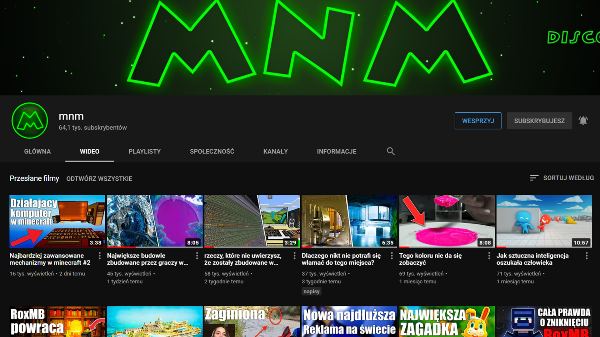
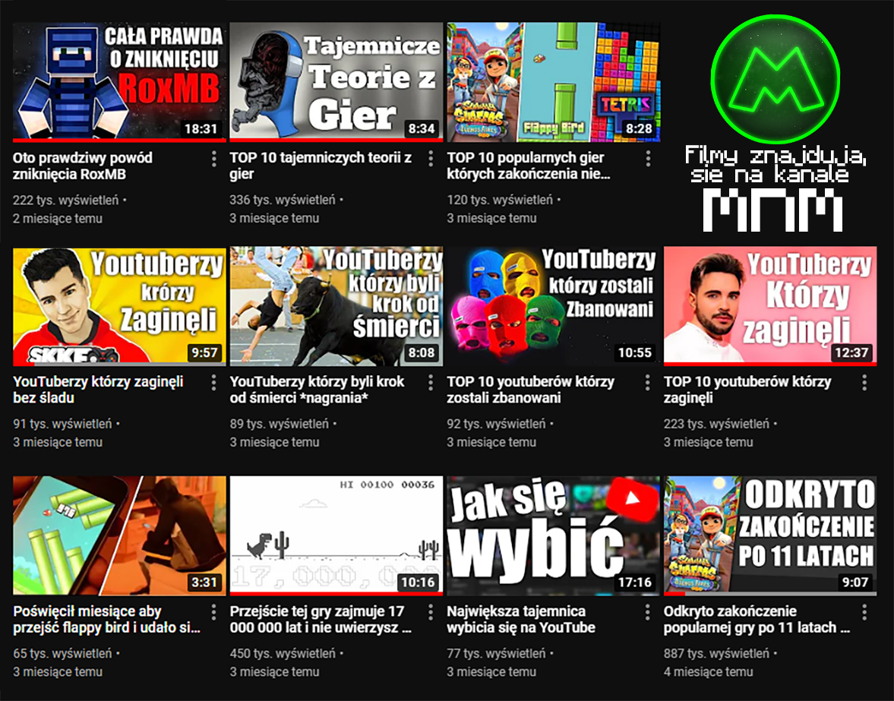

MONTAŻ
Swoje projekty filmowe projekty tworze w
Adobe Premiere Pro 2020
.
MNM

Dnia 28 grudnia 2020, zacząłem montować filmy na kanał
mnm
Montowałem tam filmy o tematyce teorii o grach, oraz ciekawostkowych
Najpopularniejszy film który zmontowałem dla
mnm'a
ma aktualnie prawie
900k wyświetleń
MNM

Łącznie zmontowałem ok.
13 materiałów
na ten kanał.
Z czego tylko
11
jest wciąż dostępne do obejrzenia
Uprzedzając pytania, nie są możliwe do obejrzenia z powodu
błędów w treści danego materiału, np. teoria okazała się nie prawdziwa